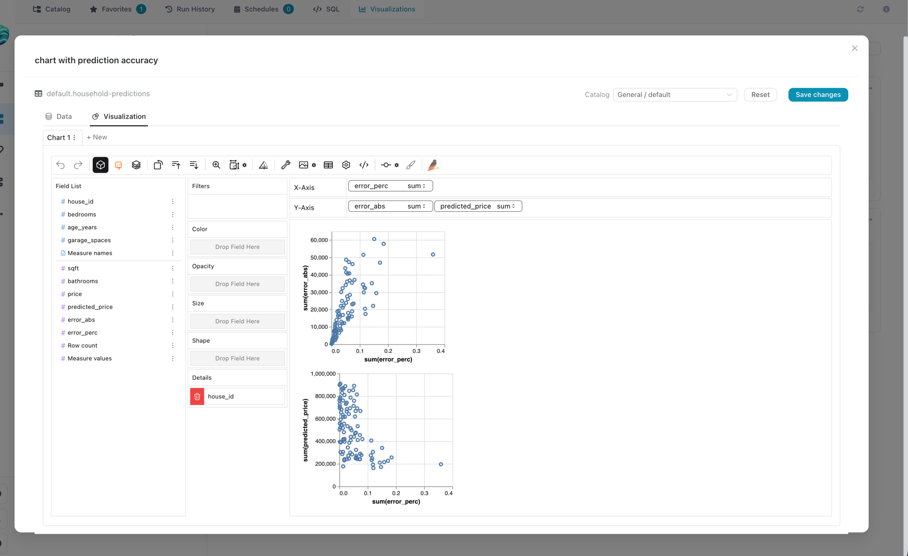

Visualizations & Graphic Walker
Flowfile users build interactive charts on top of any catalog table, SQL query, or flow node. The chart UI itself is Graphic Walker, and every aggregation it produces runs through polars-gw against the underlying data. The feature has two distinct halves: a small CRUD surface that saves chart specifications in the catalog, and a hot path that answers a flood of small Polars queries while the user is editing.
Every Graphic Walker surface shares that hot path, so a chart built in the designer's Explore Data node and the same chart built on a catalog table produce the same numbers. Only the source differs.
This page covers the why — how the data is kept warm, where each request goes, and what cleans up. The user-facing tour lives at Visual Editor → Catalog → Visualizations.

The Graphic Walker editor mounted in the catalog; every drag on a shelf produces a Polars query against the source.
The shape of the problem
Graphic Walker fires a query at the backend every time the user drops or removes a field. Sum of revenue by region is one query; switching the aggregation to mean is another; adding a year filter is a third. Each individual query is small, but they arrive in rapid bursts and they all hit the same dataset.
Reopening the source for every query would re-scan or re-load gigabytes on every drag. The data has to stay warm in memory between queries. But it also can't sit inside Flowfile's main API process: a pinned LazyFrame would fatten the core process, monopolise its event loop, and bring everything down with the first slow query.
That tension drives the rest of the design.
The four-process picture
Frontend (Vue + Graphic Walker)
│
│ HTTP
▼
flowfile_core catalog CRUD, auth, "where does this viz read from?"
│
│ HTTP
▼
flowfile_worker thin FastAPI; routes requests to the right child
│
│ multiprocessing queues
▼
spawned child imports Polars, holds the LazyFrame, runs polars-gw
Two boundaries do real work here:
- Core never touches a
LazyFrame.VisualizationServiceresolves where a visualization reads from — a Delta table, a SQL string, a Python flow — and ships a small descriptor to the worker. That keeps core small and responsive. - The worker's FastAPI process doesn't import Polars either. It dispatches. The actual heavy lifting — Polars, polars-gw, dataset memory — lives in spawned child processes that the parent only knows about through queues.
The second boundary is the unusual one. Polars is memory-heavy and aggressively multithreaded; mixing it into the request-serving process means one slow query starves every other chart. Pushing it out to a child fixes that.
The pool
When a chart query arrives, the worker looks up the source's session_key and either reuses a long-lived child dedicated to that source, or spawns one. The child has already opened the data, so it just runs the new chart workflow against an in-memory LazyFrame and ships rows back.
That makes it a pool. The first query to a source pays the load cost; the next thousand are cheap. Every interaction in the editor reduces to "push request onto a queue, run polars-gw, return rows" — no disk I/O, no re-parse, no Python startup.
Two properties fall out of how the pool is keyed:
- Same source, same child. Successive queries from one visualization reuse the warm
LazyFrame. A per-handle lock guarantees that two browser tabs editing the same visualization don't trip over each other's responses. - Different sources, different children, in parallel. Two users on two tables — or one user with two visualization tabs open — run in separate processes that don't block each other. There is no global lock between sessions.
flowfile_worker/flowfile_worker/viz_sessions.py is the registry. flowfile_worker/flowfile_worker/viz_session_worker.py is the entry point that runs inside each spawned process — and the only place in the worker that imports polars-gw and holds the visualization dataset in memory. (Plain polars is imported by other worker modules such as funcs.py and catalog_reader.py; it's the polars-gw session data that is confined to the spawned child.)
Why the pool cleans itself up
Each child holds a real, live dataset, so left alone they accumulate and the worker host eventually OOMs. The pool is bounded and self-pruning, with several overlapping mechanisms because no single one catches every scenario:
- Idle children expire. A reaper thread runs every 30s and tears down anything that hasn't been used in roughly five minutes.
- Old children rotate out. After a long lifetime (~30 minutes) or enough requests served (~500), the next request gets a fresh child. This catches slow memory drift inside Polars and polars-gw — the kind that doesn't surface in any single query.
- The pool itself is capped. Beyond ~32 concurrent sessions the least-recently-used one is evicted.
- Data changes rotate the key, not the child. Session keys are version-addressed — a physical table keys on its live Delta version, a SQL source's digest folds in the versions of every referenced table, and a flow-virtual source keys on its materialized snapshot file. A write to the underlying data means the next request computes a different key and spawns a fresh child; the old one simply idles out. No explicit evict is needed for freshness (a manual
/catalog/visualize_evictendpoint exists for ops). - Shutdown reaps everyone. The worker's FastAPI lifespan hook drains queues and kills every child on exit.
Every one of these paths runs the child through the same shutdown sequence: send a graceful stop, wait briefly, terminate, kill if it's still alive, drop references. Nothing is kept around on the assumption it might be needed later.
The actual numeric thresholds live as constants near the top of flowfile_worker/flowfile_worker/viz_sessions.py (IDLE_TTL_SECONDS, MAX_SESSIONS, REAP_INTERVAL_SECONDS, MAX_REQUESTS_PER_CHILD, MAX_CHILD_LIFETIME_SECONDS) and are tunable.
What a "visualization" looks like at rest
A visualization is a row in catalog_visualizations: a name, a Graphic Walker chart spec (JSON, possibly multi-tab), a pointer to either a catalog table or an inline SQL query, and a thumbnail PNG captured client-side at save time. Schemas live in flowfile_core/flowfile_core/schemas/catalog_schema.py.
A visualization never embeds the data — it embeds how to find the data. That's why deleting the underlying table doesn't cascade-delete the visualization (it becomes orphaned and the library labels it as such), why moving a visualization between namespaces is free, and why a SQL visualization can reference whatever tables exist in the catalog at query time.
The Explore Data node
The designer's Explore Data node is the same machinery pointed at a flow node instead of a catalog row. It has no saved visualization: the chart spec lives in the node's own settings (NodeExploreData.graphic_walker_input.specList), and there is nothing to look up in the database.
That leaves one problem — a flow node's result isn't a Delta table the worker can open by name. flowfile_core/flowfile_core/flowfile/analytics/node_viz.py solves it the way physical sources are solved, not the way virtual flow tables are: core serialises the node's LazyFrame and ships the plan itself as a kind="plan" source. The child deserialises it and holds it lazily, so Polars pushes each chart's projection into the node's own sources.
Nothing is materialised. Snapshotting the node to Arrow IPC first is the obvious alternative, and it is worse on every axis: on a 294 MB Parquet of 12.6 M rows × 24 string columns it produces a 4.9 GB file — a 16.7× blow-up — to answer queries Polars serves straight off the Parquet in ~0.04 s. When a node's plan is already a cheap scan, the Parquet is the better cache.
Two details are load-bearing:
- The session key is content-addressed.
sha256(plan_bytes)[:16]plus a run token. Notflow_id—create_unique_id()regenerates that on every flow open, so keying on it would spawn a new child per open. - The run token still matters. A serialised plan records source paths, not data snapshots, so its hash doesn't move when the underlying data does — the same trap that forces the
kernel_sharedtarget to always rebuild.node_vizfoldsflow.latest_run_info.start_time(microsecond resolution) into the key, so repeated drawer opens reuse one warm child while a re-run rotates to a fresh one.
Cloud-backed plans are refused, not shipped: Polars inlines storage_options, so a cloud scan's blob carries the connection's decrypted credentials, and a viz session child is long-lived.
Routes are POST /analysis_data/compute and POST /analysis_data/fields (routes/routes.py), alongside GET /analysis_data/graphic_walker_input, which returns the saved specs and the node's field list — never rows.
Readiness is results.resulting_data, not has_completed_last_run
The 422 that tells the drawer "this step hasn't run yet" keys on node.results.resulting_data. node_stats.has_completed_last_run looks like the right flag but is only set when performance_mode is off, so a Performance-mode local run leaves it False on a node that ran perfectly well.
The drawer's Fetch button runs in performance mode
trigger_fetch_node defaults to performance_mode=False because it is the data-preview tool — that flag is what makes the node store its result so the 100-row example grid has something to read. The chart builder never reads those rows, so it passes performance_mode=True (and reset_cache=False), which skips the ExternalDfFetcher store entirely and leaves the fetch as "build the lazy plan".
Adding a new source kind
To support a new source — a remote Postgres, a parquet on S3, anything — the touchpoints are:
- Extend the source descriptor in core, and the matching worker model, so the new kind is expressible.
- Teach
VisualizationService(flowfile_core/flowfile_core/catalog/services/visualizations.py) to translate it into a worker descriptor and emit a deterministicsession_key(_session_key_for_tableand thesession_keyfields). The session key is what lets the pool reuse children. - Teach
viz_session_worker._build_viz_loader_in_childto open the new kind as a PolarsLazyFrame.
Path validation and source resolution live in core on purpose. The worker child should treat its inputs as already-validated names plus an opaque chart payload — defence-in-depth is core's job.
Tests
flowfile_core/tests/test_catalog_visualizations.py— CRUD, validation, dispatch into the worker triggers.flowfile_core/tests/flowfile/analytics/test_node_viz.py— the Explore Data node's source descriptor, run-token invalidation, and the un-run refusal.flowfile_core/tests/flowfile/analytics/test_analytics_processor.py— the setup payload carries no rows, and the readiness gate clears in all four execution mode/location combinations.flowfile_worker/tests/test_catalog_visualize.py— registry behaviour and the spawned-child path, including a structural test that the per-handle lock really is per-handle, pluscache_keynaming, reuse, and superseded-snapshot pruning.flowfile_worker/tests/test_resolve_virtual_table.py— the IPC materialisation step used when a visualization reads from a Python flow.